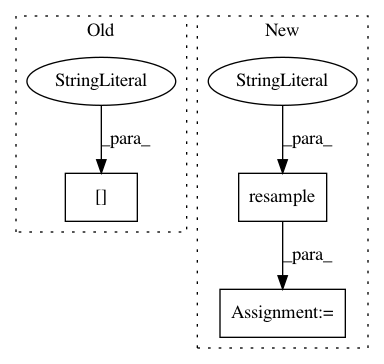

e1075d6959e923683ad29e5ee8ba0b357c923bad,examples/UnderDev/ECG_Signal_Quality_Classifier/classifier.py,,,#,7
Before Change
ecg = nk.ecg_process(ecg)["ECG"]
heartbeats = ecg["Cardiac_Cycles"]
//heartbeats.index = pd.date_range(pd.datetime.today(), periods=600, freq="ms")
//model, heartbeats = nk.ecg_classify_heartbeats(heartbeats)
After Change
ecg = pd.read_csv("data_test_ecg.csv")["ECG"]
ecg.index = pd.date_range(pd.datetime.today(), periods=len(ecg), freq="ms")
ecg = ecg.resample("5L").mean()
sampling_rate=200
heartbeats = nk.ecg_process(ecg, sampling_rate=sampling_rate)["ECG"]["Cardiac_Cycles"]
quality = ecg_signal_quality(heartbeats, 200)
In pattern: SUPERPATTERN
Frequency: 3
Non-data size: 3
Instances
Project Name: neuropsychology/NeuroKit.py
Commit Name: e1075d6959e923683ad29e5ee8ba0b357c923bad
Time: 2017-05-18
Author: dom.mak19@gmail.com
File Name: examples/UnderDev/ECG_Signal_Quality_Classifier/classifier.py
Class Name:
Method Name:
Project Name: neuropsychology/NeuroKit.py
Commit Name: 628c6db73c74fdb798c6fdb375a5903807de1511
Time: 2017-05-17
Author: dom.mak19@gmail.com
File Name: examples/UnderDev/ECG_Signal_Quality_Classifier/classifier.py
Class Name:
Method Name:
Project Name: QUANTAXIS/QUANTAXIS
Commit Name: 89b43bbd55550d5c103a8b06281d9bc62e533680
Time: 2019-08-05
Author: yutiansut@qq.com
File Name: QUANTAXIS/QAData/data_resample.py
Class Name:
Method Name: QA_data_min_resample